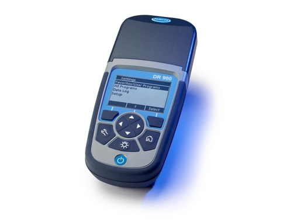
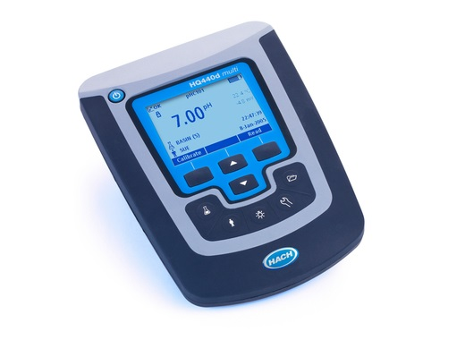
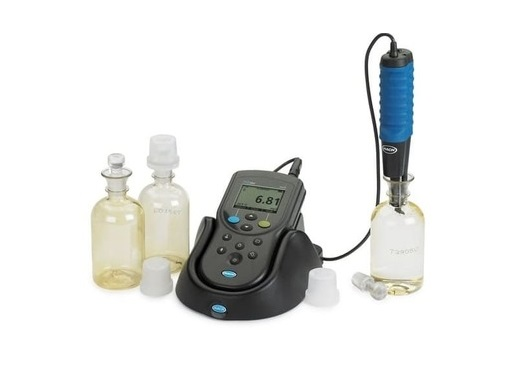
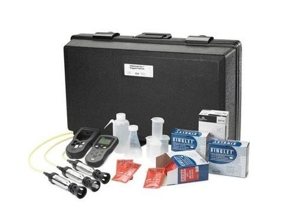

Read More video
DR900 Robust portable datalogging colorimeter
DR900 Robust portable datalogging colorimeter allows for quick and easy access to your most frequently used testing methods in less than four clicks. This colorimeter is waterproof, dustproof, shock resistant, and has been drop tested for greater quality assurance..Read More video

Portable Turbidimeter 2100Q
With easy-to-follow on-screen instructions, manuals or memorisation are not needed for routine calibrations.Ratio turbidimetric determin ation using a primary nephelometric light scatter signal (90°) and transmitted light scatter signal. Accuracy:± 2 % of reading plus stray light. Range:0 – 1000.Read More video

Read More video
HQD Laboratory Meters
All HQD meters feature an advanced yet simple user interface. HQD meters connect with smart Intellical electrodes and automatically recognize the testing parameter, calibration history, and method settings to minimize errors and setup time.All HQD meters feature an advanced yet simple user interfaceRead More video

Spectrophotometer DR1900
The DR1900 has a clear screen and a simple user interface. The instrument is built for rugged conditions, and it’s flexible, accepting the widest range of vial sizes. Tests are performed with a wavelength range of 340 to 800 nm which make this a field instrument you can use to find results typically only seen in laboratory instruments.Read More video

DR300 Colorimeter
DR300 Pocket Colorimeter connects to Claros™, Hach’s innovative Water Intelligence System, enabling you to seamlessly connect and manage instruments, data, and process – anywhere, anytime. The result is greater confidence in your data and improved efficiencies in your operations.Read More video




Sension MM156 Portable Multi-Parameter Meter
An all in one system with guided menu navigation makes general electrochemistry testing fast and simple. Each system is designed to be used in a wide variety of applications.Read More

TSS Portable Handheld instrument for Turbidity/Suspended Solids, 10m
Compact instrument for analytical determination by continuous measurement mode with integration time setting. ShockproofRead More

MEL Potable Water Lab
MEL Potable Water Lab includes: DR900 Colorimeter, Pocket TDS and pH Testers, Portable Incubator (used to determine total and fecal coliforms directly in the field), Portable UV Lamp, media and apparatus for testing E. coli and total coliforms, plus 8 common water quality tests.Read More

Portable Laboratories
Most versatile portable laboratory, includes DR 900 Colorimeter, HQ40d multi-meter, PHC201 pH electrode, CDC401 conductivity probe, Digital Titrator, illustrated instrument manual, procedure manual CD, reagent sets, and all required apparatus in a rugged carrying case.Read More

Read More
Portable pH, Conductivity/TDS Dissolved Oxygen Meter.
The HQD portable meters connect with a wide range of Intellical smart electrodes addressing different parameters, sample types and operating environment for water quality and treatment process purposes.Read More

Digital Titrator with plastic case
Portable and robust digital Titrator for fast and precise titrations. High resolution and high accuracy. Easy handling. Applications for more than 40 parameters with interchangeable cartridges.Read More
Digital Titrator with plastic case
Portable and robust digital Titrator for fast and precise titrations. High resolution and high accuracy. Easy handling. Applications for more than 40 parameters with interchangeable cartridges.Read More
Digital Titrator with plastic case
Portable and robust digital Titrator for fast and precise titrations. High resolution and high accuracy. Easy handling. Applications for more than 40 parameters with interchangeable cartridges.Read More